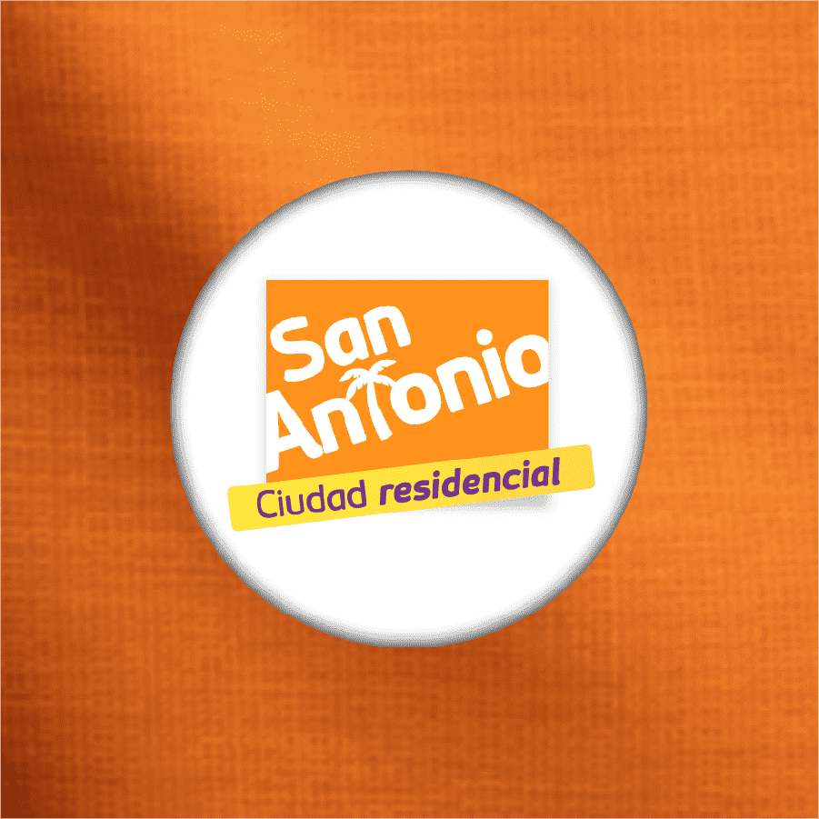
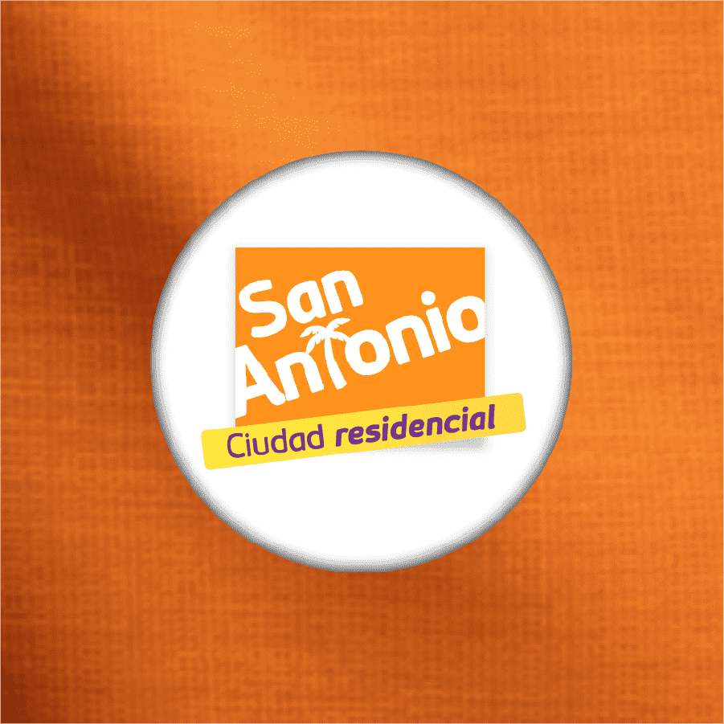
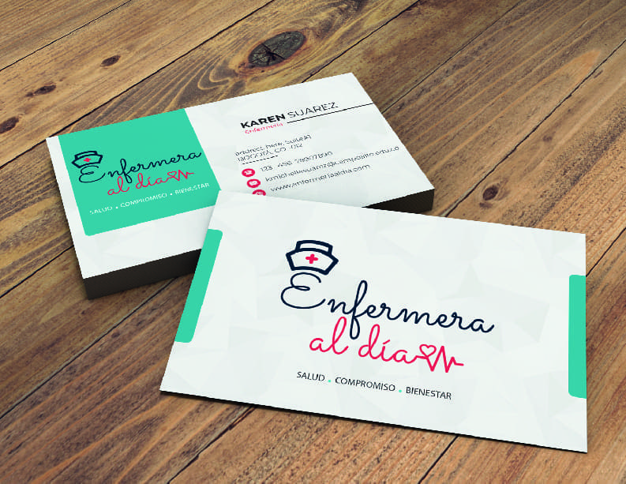
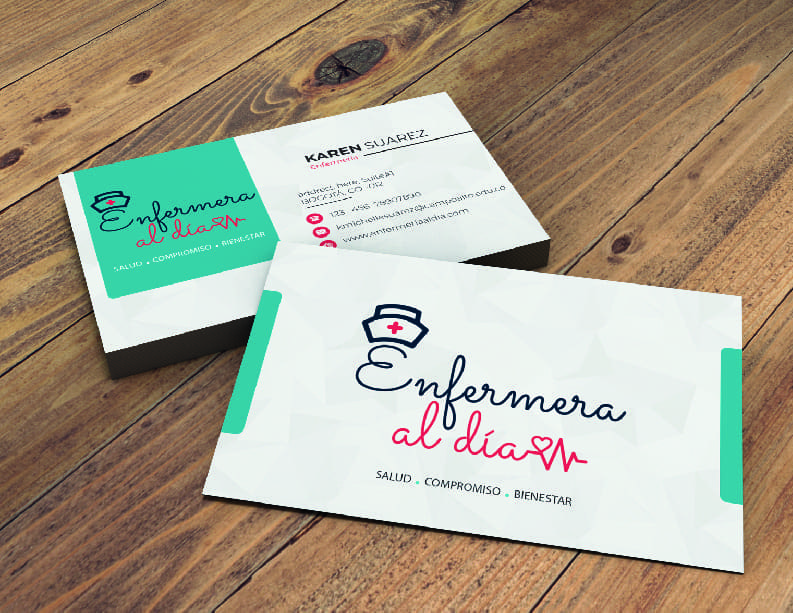

Constructoras
Propuestas para uso de redes sociales para proyectos de constructoras, tales como once, Alameda del rio, San antonio, entre otras, las propuestas de diseño variaron entre pautas, calendarios de condenido mensuales para las principales redes sociales, eventos, banners, ajustes de video, y promocionales.
 



Proyectos Corporativos
Contenido gráfico para redes sociales de diversos sectores. En Flores de Colores ajusté banners e imágenes y creé parrillas de contenido para fortalecer su presencia digital. Para Persom SAS diseñé flyers y contenido para redes. En ATM realicé diseños visuales que impulsaron la promoción de sus servicios de viajes.
Dico Telecomunicaciones
En Dico Telecomunicaciones desarrollé el área de diseño, ya que la empresa no contaba con un cargo dedicado a este. Realicé el diseño de contenido impreso, piezas gráficas para redes sociales y la creación de videos corporativos. Además, establecí las bases para un manual de marca, definiendo los lineamientos visuales para asegurar una identidad consistente.


Color Art
Color Art fue un proyecto de emprendimiento enfocado en la creación de diseños personalizados para cuadros. Me encargué de la edición y ajuste de las imágenes para su impresión en retablos, asegurando la calidad visual de cada pieza. Además, gestioné la creación de contenido para redes sociales y diseñé ofertas promocionales, lo que permitió atraer más clientes y aumentar la visibilidad del proyecto.
Proyectos Freelance
Trabaje con diversos emprendimientos, creando una variedad de materiales gráficos como tarjetas de presentación, logos personalizados y flyers para redes sociales. Estos proyectos se centraron en desarrollar identidades visuales únicas y material promocional que ayude a los negocios a destacar y conectar efectivamente con su público objetivo en plataformas digitales

 



ESBALCA
Esbalca fue un proyecto universitario grupal enfocado en el rediseño del logo y la creación de contenido para redes sociales de un equipo de baloncesto aficionado en Bogotá. El objetivo fue revitalizar la imagen del equipo y aumentar su presencia en plataformas digitales, mejorando su identidad visual y conectando mejor con su audiencia.